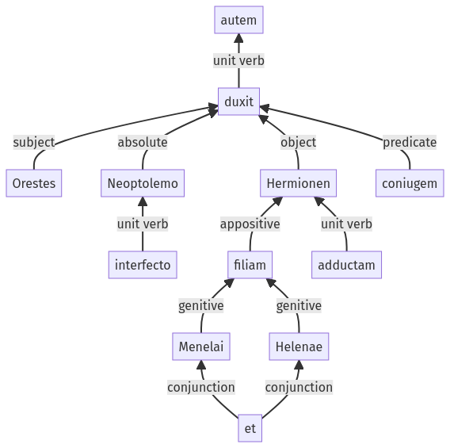

Hyginus, Fabuleer, 122a.4.1-122a.4.12a
122a.3.19-122a.3.48a | 125a.20a.43-125a.20a.54a
Sentence 1210
122a.4.1-122a.4.12a
Orestes autem Neoptolemo interfecto Hermionen Menelai et Helenae filiam adductam coniugem duxit;
1 Orestes
2 Neoptolemo interfecto
1 Hermionen Menelai et Helenae filiam
2 adductam
1 coniugem duxit
Orestes autem Neoptolemo interfecto Hermionen Menelai et Helenae filiam adductam coniugem duxit;
Highlighting:
- connecting words
- unit verb
- subject
- object
Color code:
- independent clause (level 1, transitive verb)
- participle (level 2, transitive verb)
- participle (level 2, transitive verb)
